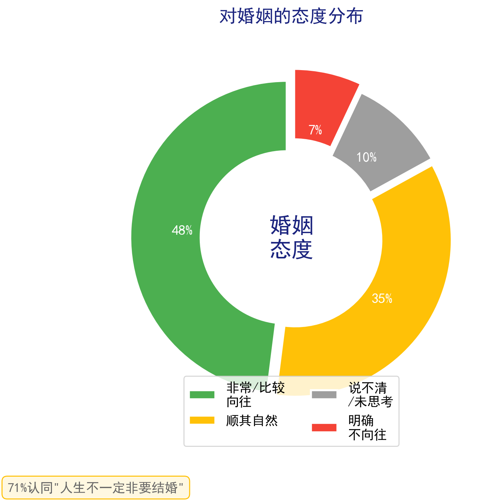
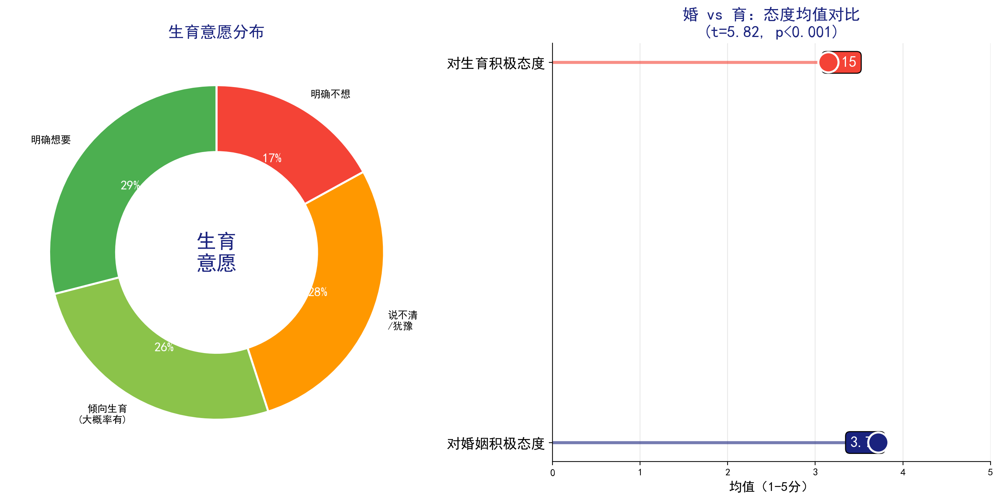
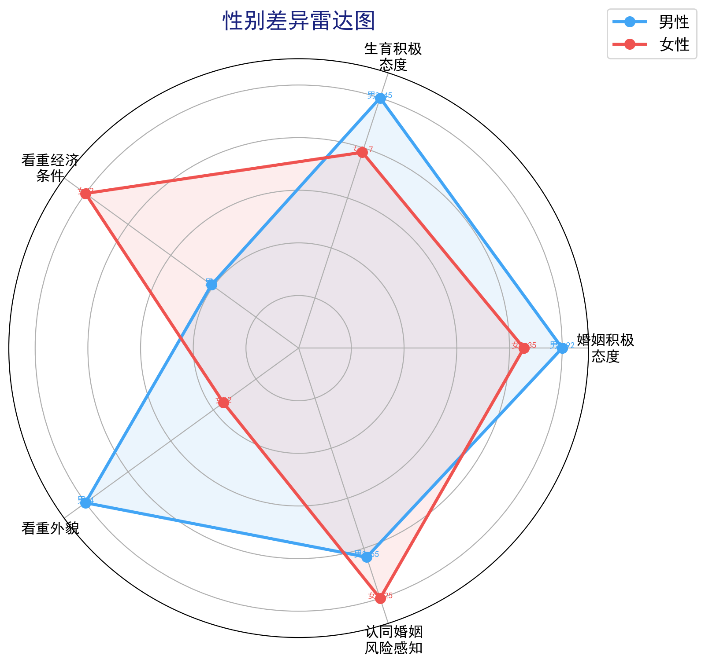
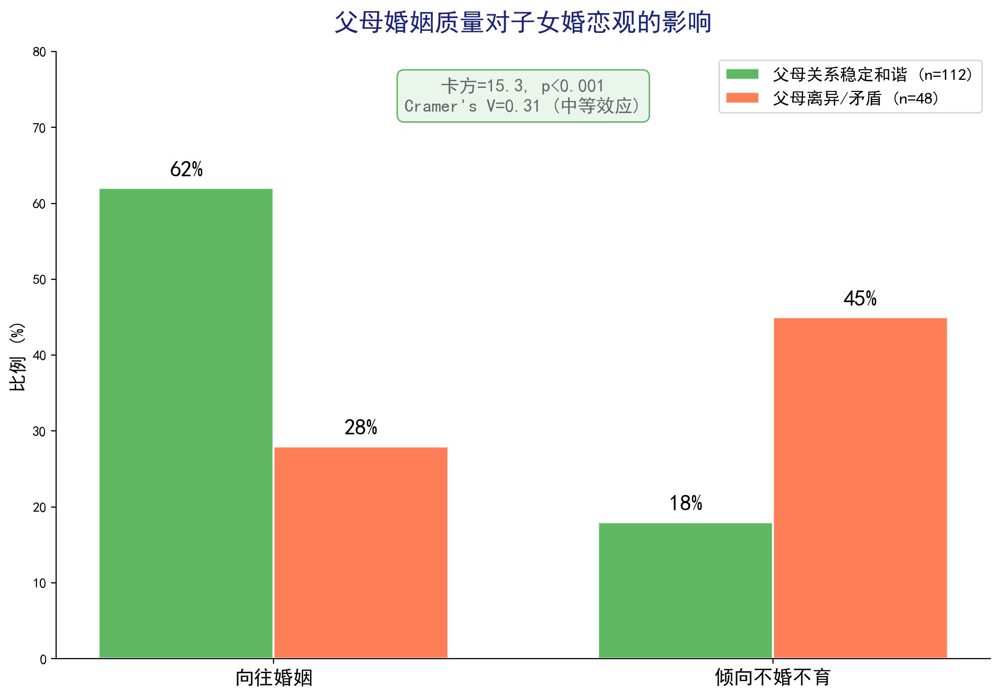
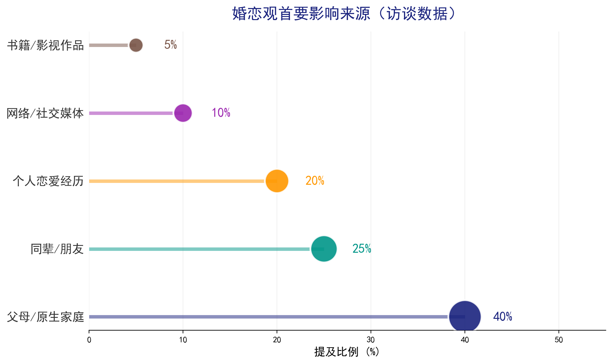
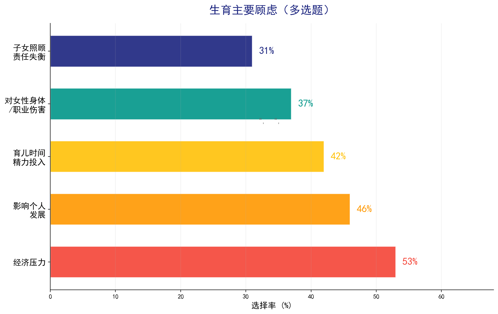
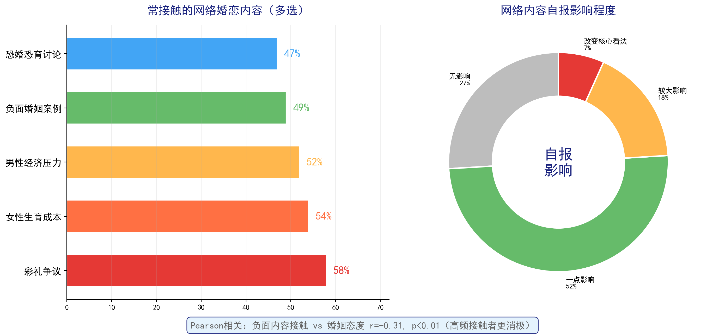
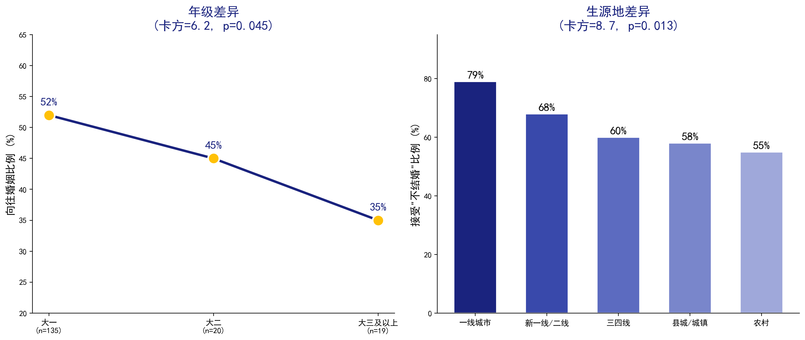
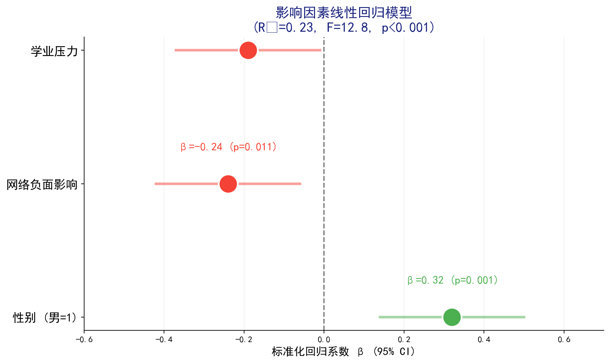

174份问卷 + 40人深度访谈 | 2026年5月
南京大学 · 思修社会实践项目
对婚姻、对生育的态度如何？
婚育解绑了吗？
性别、家庭、年级、网络……
谁在塑造婚恋观？
网上的"不婚不育"叙事
与现实差距有多大？
174
有效问卷 · 信度 α>0.83
覆盖南大、东大、上交等高校
40
标准化8题核心题库
单身60% · 恋爱40%
5+
茅倬彦(2024) · 于力超(2023)
计迎春(2025)


💡 生育决策已从"要不要生"转变为"在什么条件下可以承担生育成本"的成本收益分析
p=0.002 — 差异极显著
t=3.12, 随机概率仅0.2%




53% 的同学跟你一样担心经济压力
这不是个人能力问题
是系统性困境

Pearson相关 r=-0.31, p<0.01：高频接触负面内容者婚姻态度更低

💡 城市学生并非"对婚姻更失望"，而是"对多样性选择接受度更高"

🌟
显著
95%把握不是随机误差
🌟🌟
高度显著
99%把握结果真实
🌟🌟🌟
极其显著
随机概率不到千分之一
本研究中：性别差异 p=0.002 🌟🌟 | 父母婚姻质量 p<0.001 🌟🌟🌟 | 生源地 p=0.013 🌟 | 年级 p=0.045 🌟
—— 软件工程专业 大一学生
"这不是爱的消失，而是爱的理性化"
现实中的同龄人根本没有网上那么绝望
观念主要来自父母和身边人——这本身就是觉醒
差异不是"谁对谁错"，是减少误解的起点
53%同样担心——这是系统性困境，不是你个人问题
你的选择代表了一代人的思考，你不是"异类"
但对于社会，最需要的不是每月100元的津贴，
而是——在让人们明确婚育弊端的前提下，
给出最大的保障，让人能够真正享受到婚育的美好。
欢迎提问与讨论
174份问卷 + 40人深度访谈 | 2026年5月 | 南京大学 · 思修社会实践